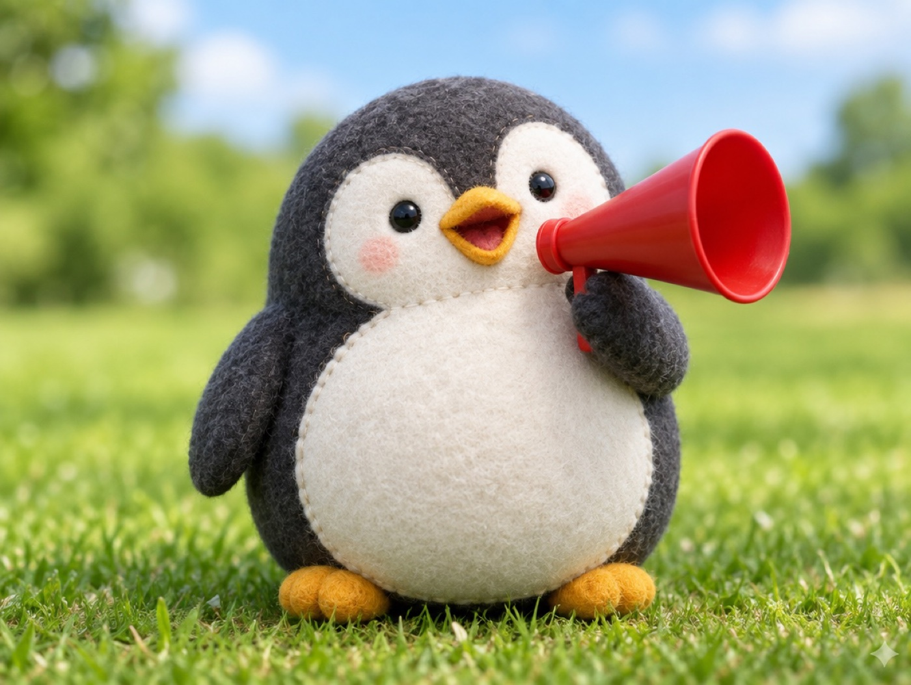

📝 DRAFT · 下書き — まだ本番に出していません · 下書き一覧
🐧 EVERYDAY LIFE⚡ 19 SEC
Nerves and anger are just your brain barking like a dog 🐕

Not Your Choice
Nerves and worries are not things you wanted.
Your brain started them on its own.
Barking Dog
When a dog barks on a walk, no one gets angry along with it, right?
Like an Announcer
When you get annoyed, say it like a sports announcer: "Oh, my brain is getting angry!"
⚡ TRY IT
Your brain is a little dog
The dog barks alarms at you. Bark back? Or calmly report it like an announcer?
You
Your brain
🔊 Noise
🎙️ Calm reports
The dog is sleeping… for now.
Here it comes! What will you do?
😠 WOOF WOOF! Now you are both barking. Louder!
🎙️ You just watched it. The dog looks at you and calms down a little.
💤 The dog sat down and fell asleep. You only watched it.
🔊 So loud! Barking back made it bigger. Try reporting instead.
Just Watch
You can just watch it and think, "What a silly brain."
📚 I learned this from the Japanese blog "Panda no Ondo".